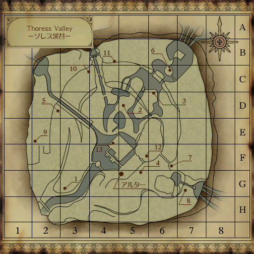

一覧釣りガイド：ソレス渓谷(Ancient Age)（57110）
ソレス渓谷(Ancient Age) の釣り場 72 か所（魚の出る位置 114）。
釣り場の地図

#1#2#3#4#5#6青い点が魚の出る位置、#番号が釣り場（3 匹以上）。点にマウスを合わせると魚の名前。
釣り場
地図の青い点が魚、赤がプレイヤーを襲うモンスターの出る位置。失敗マスはヒットゾーン 0・HP 満タンの魚のときのゲージに占める割合。
#1（魚 6 匹）
- 魚の数
- 6
- 広さ
- 52 m
- 再出現
- 60 秒〜2 分
- 魚の Lv
- 8〜51
釣れる魚
| 魚（出るたびに抽選） | 数 | おもなドロップ（1 匹あたり） | 失敗マス（スキル 30 / 60 / 90） |
|---|---|---|---|
| レイク フィッシュ Lv 8〜10（50%）／レイク フィッシュ Lv 13〜15（40%）／レイク フィッシュ Lv 18〜20（10%） | 5 | 白身魚の切り身 7.9、魚の浮き袋 0.4 | 11% / 0% / 0% |
| 古代魚 Lv 37〜40（50%）／古代魚 Lv 42〜45（40%）／古代魚 Lv 48〜51（10%） | 1 | 白身魚の切り身 15.6、魚の浮き袋 1.2 | 40% / 11% / 0% |
近くの敵
プレイヤーを襲うモンスターは届かない。
#2（魚 6 匹）
- 魚の数
- 6
- 広さ
- 60 m
- 再出現
- 60 秒
- 魚の Lv
- 8〜20
釣れる魚
| 魚（出るたびに抽選） | 数 | おもなドロップ（1 匹あたり） | 失敗マス（スキル 30 / 60 / 90） |
|---|---|---|---|
| レイク フィッシュ Lv 8〜10（50%）／レイク フィッシュ Lv 13〜15（40%）／レイク フィッシュ Lv 18〜20（10%） | 6 | 白身魚の切り身 7.9、魚の浮き袋 0.4 | 11% / 0% / 0% |
近くの敵
プレイヤーを襲うモンスターは届かない。
#3（魚 5 匹）
- 魚の数
- 5
- 広さ
- 60 m
- 再出現
- 60 秒〜2 分
- 魚の Lv
- 8〜51
釣れる魚
| 魚（出るたびに抽選） | 数 | おもなドロップ（1 匹あたり） | 失敗マス（スキル 30 / 60 / 90） |
|---|---|---|---|
| レイク フィッシュ Lv 8〜10（50%）／レイク フィッシュ Lv 13〜15（40%）／レイク フィッシュ Lv 18〜20（10%） | 4 | 白身魚の切り身 7.9、魚の浮き袋 0.4 | 11% / 0% / 0% |
| 古代魚 Lv 37〜40（50%）／古代魚 Lv 42〜45（40%）／古代魚 Lv 48〜51（10%） | 1 | 白身魚の切り身 15.6、魚の浮き袋 1.2 | 40% / 11% / 0% |
近くの敵
プレイヤーを襲うモンスターは届かない。
#4（魚 3 匹）
- 魚の数
- 3
- 広さ
- 47 m
- 再出現
- 3 分
- 魚の Lv
- 8〜20
釣れる魚
| 魚（出るたびに抽選） | 数 | おもなドロップ（1 匹あたり） | 失敗マス（スキル 30 / 60 / 90） |
|---|---|---|---|
| レイク フィッシュ Lv 8〜10（50%）／レイク フィッシュ Lv 13〜15（40%）／レイク フィッシュ Lv 18〜20（10%） | 3 | 白身魚の切り身 7.9、魚の浮き袋 0.4 | 11% / 0% / 0% |
近くの敵
プレイヤーを襲うモンスターは届かない。
#5（魚 3 匹）
- 魚の数
- 3
- 広さ
- 33 m
- 再出現
- 60 秒〜2 分
- 魚の Lv
- 8〜51
釣れる魚
| 魚（出るたびに抽選） | 数 | おもなドロップ（1 匹あたり） | 失敗マス（スキル 30 / 60 / 90） |
|---|---|---|---|
| レイク フィッシュ Lv 8〜10（50%）／レイク フィッシュ Lv 13〜15（40%）／レイク フィッシュ Lv 18〜20（10%） | 2 | 白身魚の切り身 7.9、魚の浮き袋 0.4 | 11% / 0% / 0% |
| 古代魚 Lv 37〜40（50%）／古代魚 Lv 42〜45（40%）／古代魚 Lv 48〜51（10%） | 1 | 白身魚の切り身 15.6、魚の浮き袋 1.2 | 40% / 11% / 0% |
近くの敵
プレイヤーを襲うモンスターは届かない。
#6（魚 3 匹）
- 魚の数
- 3
- 広さ
- 36 m
- 再出現
- 60 秒
- 魚の Lv
- 8〜20
釣れる魚
| 魚（出るたびに抽選） | 数 | おもなドロップ（1 匹あたり） | 失敗マス（スキル 30 / 60 / 90） |
|---|---|---|---|
| レイク フィッシュ Lv 8〜10（50%）／レイク フィッシュ Lv 13〜15（40%）／レイク フィッシュ Lv 18〜20（10%） | 3 | 白身魚の切り身 7.9、魚の浮き袋 0.4 | 11% / 0% / 0% |
近くの敵
プレイヤーを襲うモンスターは届かない。
小さな釣り場（魚 1〜2 匹）
| 釣り場 | 魚 | 釣れる魚 | 再出現 | 近くの敵 |
|---|---|---|---|---|
| #7 | 2 | レイク フィッシュ Lv 8〜10（50%）／レイク フィッシュ Lv 13〜15（40%）／レイク フィッシュ Lv 18〜20（10%） | 60 秒〜2 分 | なし |
| #8 | 2 | レイク フィッシュ Lv 8〜10（50%）／レイク フィッシュ Lv 13〜15（40%）／レイク フィッシュ Lv 18〜20（10%） | 60 秒〜2 分 | なし |
| #9 | 2 | レイク フィッシュ Lv 8〜10（50%）／レイク フィッシュ Lv 13〜15（40%）／レイク フィッシュ Lv 18〜20（10%） | 60 秒〜2 分 | なし |
| #10 | 2 | レイク フィッシュ Lv 8〜10（50%）／レイク フィッシュ Lv 13〜15（40%）／レイク フィッシュ Lv 18〜20（10%） | 60 秒〜2 分 | なし |
| #11 | 2 | レイク フィッシュ Lv 8〜10（50%）／レイク フィッシュ Lv 13〜15（40%）／レイク フィッシュ Lv 18〜20（10%） | 60 秒〜2 分 | なし |
| #12 | 2 | レイク フィッシュ Lv 8〜10（50%）／レイク フィッシュ Lv 13〜15（40%）／レイク フィッシュ Lv 18〜20（10%） | 60 秒〜2 分 | なし |
| #13 | 2 | レイク フィッシュ Lv 8〜10（50%）／レイク フィッシュ Lv 13〜15（40%）／レイク フィッシュ Lv 18〜20（10%） | 60 秒〜2 分 | なし |
| #14 | 2 | レイク フィッシュ Lv 8〜10（50%）／レイク フィッシュ Lv 13〜15（40%）／レイク フィッシュ Lv 18〜20（10%） | 60 秒〜2 分 | なし |
| #15 | 2 | レイク フィッシュ Lv 8〜10（50%）／レイク フィッシュ Lv 13〜15（40%）／レイク フィッシュ Lv 18〜20（10%） | 60 秒〜2 分 | なし |
| #16 | 2 | レイク フィッシュ Lv 8〜10（50%）／レイク フィッシュ Lv 13〜15（40%）／レイク フィッシュ Lv 18〜20（10%） | 60 秒〜2 分 | なし |
| #17 | 2 | レイク フィッシュ Lv 8〜10（50%）／レイク フィッシュ Lv 13〜15（40%）／レイク フィッシュ Lv 18〜20（10%） | 60 秒〜2 分 | なし |
| #18 | 2 | レイク フィッシュ Lv 8〜10（50%）／レイク フィッシュ Lv 13〜15（40%）／レイク フィッシュ Lv 18〜20（10%） | 60 秒〜2 分 | なし |
| #19 | 2 | レイク フィッシュ Lv 8〜10（50%）／レイク フィッシュ Lv 13〜15（40%）／レイク フィッシュ Lv 18〜20（10%） 古代魚 Lv 37〜40（50%）／古代魚 Lv 42〜45（40%）／古代魚 Lv 48〜51（10%） | 60 秒〜2 分 | なし |
| #20 | 2 | レイク フィッシュ Lv 8〜10（50%）／レイク フィッシュ Lv 13〜15（40%）／レイク フィッシュ Lv 18〜20（10%） | 60 秒〜2 分 | なし |
| #21 | 2 | レイク フィッシュ Lv 8〜10（50%）／レイク フィッシュ Lv 13〜15（40%）／レイク フィッシュ Lv 18〜20（10%） | 2 分 | なし |
| #22 | 2 | レイク フィッシュ Lv 8〜10（50%）／レイク フィッシュ Lv 13〜15（40%）／レイク フィッシュ Lv 18〜20（10%） 古代魚 Lv 37〜40（50%）／古代魚 Lv 42〜45（40%）／古代魚 Lv 48〜51（10%） | 2 分 | なし |
| #23 | 2 | レイク フィッシュ Lv 8〜10（50%）／レイク フィッシュ Lv 13〜15（40%）／レイク フィッシュ Lv 18〜20（10%） | 3 分 | なし |
| #24 | 2 | レイク フィッシュ Lv 8〜10（50%）／レイク フィッシュ Lv 13〜15（40%）／レイク フィッシュ Lv 18〜20（10%） | 60 秒 | なし |
| #25 | 2 | レイク フィッシュ Lv 8〜10（50%）／レイク フィッシュ Lv 13〜15（40%）／レイク フィッシュ Lv 18〜20（10%） | 60 秒 | なし |
| #26 | 2 | レイク フィッシュ Lv 8〜10（50%）／レイク フィッシュ Lv 13〜15（40%）／レイク フィッシュ Lv 18〜20（10%） 古代魚 Lv 37〜40（50%）／古代魚 Lv 42〜45（40%）／古代魚 Lv 48〜51（10%） | 60 秒〜2 分 | なし |
| #27 | 2 | 古代魚 Lv 37〜40（50%）／古代魚 Lv 42〜45（40%）／古代魚 Lv 48〜51（10%） | 2 分 | なし |
| #28 | 2 | 古代魚 Lv 37〜40（50%）／古代魚 Lv 42〜45（40%）／古代魚 Lv 48〜51（10%） | 2 分 | なし |
| #29 | 1 | レイク フィッシュ Lv 8〜10（50%）／レイク フィッシュ Lv 13〜15（40%）／レイク フィッシュ Lv 18〜20（10%） | 60 秒 | なし |
| #30 | 1 | レイク フィッシュ Lv 8〜10（50%）／レイク フィッシュ Lv 13〜15（40%）／レイク フィッシュ Lv 18〜20（10%） | 60 秒 | なし |
| #31 | 1 | レイク フィッシュ Lv 8〜10（50%）／レイク フィッシュ Lv 13〜15（40%）／レイク フィッシュ Lv 18〜20（10%） | 60 秒 | なし |
| #32 | 1 | レイク フィッシュ Lv 8〜10（50%）／レイク フィッシュ Lv 13〜15（40%）／レイク フィッシュ Lv 18〜20（10%） | 60 秒 | なし |
| #33 | 1 | レイク フィッシュ Lv 8〜10（50%）／レイク フィッシュ Lv 13〜15（40%）／レイク フィッシュ Lv 18〜20（10%） | 60 秒 | なし |
| #34 | 1 | レイク フィッシュ Lv 8〜10（50%）／レイク フィッシュ Lv 13〜15（40%）／レイク フィッシュ Lv 18〜20（10%） | 60 秒 | なし |
| #35 | 1 | レイク フィッシュ Lv 8〜10（50%）／レイク フィッシュ Lv 13〜15（40%）／レイク フィッシュ Lv 18〜20（10%） | 60 秒 | なし |
| #36 | 1 | レイク フィッシュ Lv 8〜10（50%）／レイク フィッシュ Lv 13〜15（40%）／レイク フィッシュ Lv 18〜20（10%） | 60 秒 | なし |
| #37 | 1 | レイク フィッシュ Lv 8〜10（50%）／レイク フィッシュ Lv 13〜15（40%）／レイク フィッシュ Lv 18〜20（10%） | 60 秒 | なし |
| #38 | 1 | レイク フィッシュ Lv 8〜10（50%）／レイク フィッシュ Lv 13〜15（40%）／レイク フィッシュ Lv 18〜20（10%） | 60 秒 | なし |
| #39 | 1 | レイク フィッシュ Lv 8〜10（50%）／レイク フィッシュ Lv 13〜15（40%）／レイク フィッシュ Lv 18〜20（10%） | 60 秒 | なし |
| #40 | 1 | レイク フィッシュ Lv 8〜10（50%）／レイク フィッシュ Lv 13〜15（40%）／レイク フィッシュ Lv 18〜20（10%） | 60 秒 | なし |
| #41 | 1 | レイク フィッシュ Lv 8〜10（50%）／レイク フィッシュ Lv 13〜15（40%）／レイク フィッシュ Lv 18〜20（10%） | 60 秒 | なし |
| #42 | 1 | レイク フィッシュ Lv 8〜10（50%）／レイク フィッシュ Lv 13〜15（40%）／レイク フィッシュ Lv 18〜20（10%） | 2 分 | なし |
| #43 | 1 | レイク フィッシュ Lv 8〜10（50%）／レイク フィッシュ Lv 13〜15（40%）／レイク フィッシュ Lv 18〜20（10%） | 3 分 | なし |
| #44 | 1 | レイク フィッシュ Lv 8〜10（50%）／レイク フィッシュ Lv 13〜15（40%）／レイク フィッシュ Lv 18〜20（10%） | 3 分 | なし |
| #45 | 1 | レイク フィッシュ Lv 8〜10（50%）／レイク フィッシュ Lv 13〜15（40%）／レイク フィッシュ Lv 18〜20（10%） | 3 分 | なし |
| #46 | 1 | レイク フィッシュ Lv 8〜10（50%）／レイク フィッシュ Lv 13〜15（40%）／レイク フィッシュ Lv 18〜20（10%） | 3 分 | なし |
| #47 | 1 | レイク フィッシュ Lv 8〜10（50%）／レイク フィッシュ Lv 13〜15（40%）／レイク フィッシュ Lv 18〜20（10%） | 3 分 | なし |
| #48 | 1 | レイク フィッシュ Lv 8〜10（50%）／レイク フィッシュ Lv 13〜15（40%）／レイク フィッシュ Lv 18〜20（10%） | 3 分 | なし |
| #49 | 1 | レイク フィッシュ Lv 8〜10（50%）／レイク フィッシュ Lv 13〜15（40%）／レイク フィッシュ Lv 18〜20（10%） | 3 分 | なし |
| #50 | 1 | レイク フィッシュ Lv 8〜10（50%）／レイク フィッシュ Lv 13〜15（40%）／レイク フィッシュ Lv 18〜20（10%） | 3 分 | なし |
| #51 | 1 | レイク フィッシュ Lv 8〜10（50%）／レイク フィッシュ Lv 13〜15（40%）／レイク フィッシュ Lv 18〜20（10%） | 3 分 | なし |
| #52 | 1 | レイク フィッシュ Lv 8〜10（50%）／レイク フィッシュ Lv 13〜15（40%）／レイク フィッシュ Lv 18〜20（10%） | 3 分 | なし |
| #53 | 1 | レイク フィッシュ Lv 8〜10（50%）／レイク フィッシュ Lv 13〜15（40%）／レイク フィッシュ Lv 18〜20（10%） | 3 分 | なし |
| #54 | 1 | レイク フィッシュ Lv 8〜10（50%）／レイク フィッシュ Lv 13〜15（40%）／レイク フィッシュ Lv 18〜20（10%） | 3 分 | なし |
| #55 | 1 | レイク フィッシュ Lv 8〜10（50%）／レイク フィッシュ Lv 13〜15（40%）／レイク フィッシュ Lv 18〜20（10%） | 60 秒 | なし |
| #56 | 1 | レイク フィッシュ Lv 8〜10（50%）／レイク フィッシュ Lv 13〜15（40%）／レイク フィッシュ Lv 18〜20（10%） | 60 秒 | なし |
| #57 | 1 | 古代魚 Lv 37〜40（50%）／古代魚 Lv 42〜45（40%）／古代魚 Lv 48〜51（10%） | 2 分 | なし |
| #58 | 1 | 古代魚 Lv 37〜40（50%）／古代魚 Lv 42〜45（40%）／古代魚 Lv 48〜51（10%） | 2 分 | なし |
| #59 | 1 | 古代魚 Lv 37〜40（50%）／古代魚 Lv 42〜45（40%）／古代魚 Lv 48〜51（10%） | 2 分 | なし |
| #60 | 1 | 古代魚 Lv 37〜40（50%）／古代魚 Lv 42〜45（40%）／古代魚 Lv 48〜51（10%） | 2 分 | なし |
| #61 | 1 | 古代魚 Lv 37〜40（50%）／古代魚 Lv 42〜45（40%）／古代魚 Lv 48〜51（10%） | 2 分 | なし |
| #62 | 1 | 古代魚 Lv 37〜40（50%）／古代魚 Lv 42〜45（40%）／古代魚 Lv 48〜51（10%） | 2 分 | なし |
| #63 | 1 | 古代魚 Lv 37〜40（50%）／古代魚 Lv 42〜45（40%）／古代魚 Lv 48〜51（10%） | 2 分 | なし |
| #64 | 1 | 古代魚 Lv 37〜40（50%）／古代魚 Lv 42〜45（40%）／古代魚 Lv 48〜51（10%） | 2 分 | なし |
| #65 | 1 | 古代魚 Lv 37〜40（50%）／古代魚 Lv 42〜45（40%）／古代魚 Lv 48〜51（10%） | 2 分 | なし |
| #66 | 1 | 古代魚 Lv 37〜40（50%）／古代魚 Lv 42〜45（40%）／古代魚 Lv 48〜51（10%） | 2 分 | なし |
| #67 | 1 | 古代魚 Lv 37〜40（50%）／古代魚 Lv 42〜45（40%）／古代魚 Lv 48〜51（10%） | 2 分 | なし |
| #68 | 1 | 古代魚 Lv 37〜40（50%）／古代魚 Lv 42〜45（40%）／古代魚 Lv 48〜51（10%） | 2 分 | なし |
| #69 | 1 | 古代魚 Lv 37〜40（50%）／古代魚 Lv 42〜45（40%）／古代魚 Lv 48〜51（10%） | 2 分 | なし |
| #70 | 1 | 古代魚 Lv 37〜40（50%）／古代魚 Lv 42〜45（40%）／古代魚 Lv 48〜51（10%） | 2 分 | なし |
| #71 | 1 | 古代魚 Lv 37〜40（50%）／古代魚 Lv 42〜45（40%）／古代魚 Lv 48〜51（10%） | 2 分 | なし |
| #72 | 1 | 古代魚 Lv 37〜40（50%）／古代魚 Lv 42〜45（40%）／古代魚 Lv 48〜51（10%） | 2 分 | なし |